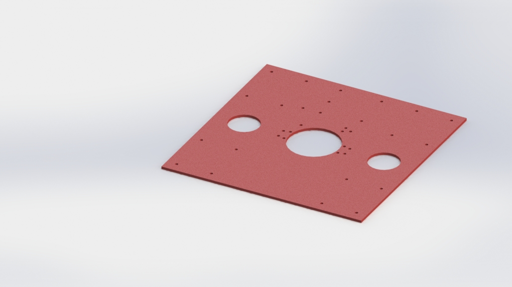
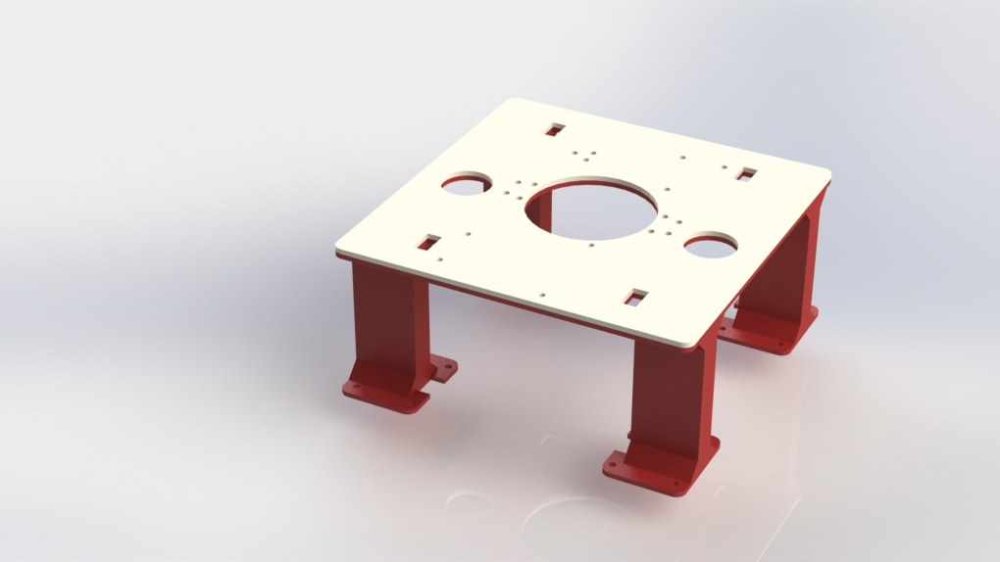
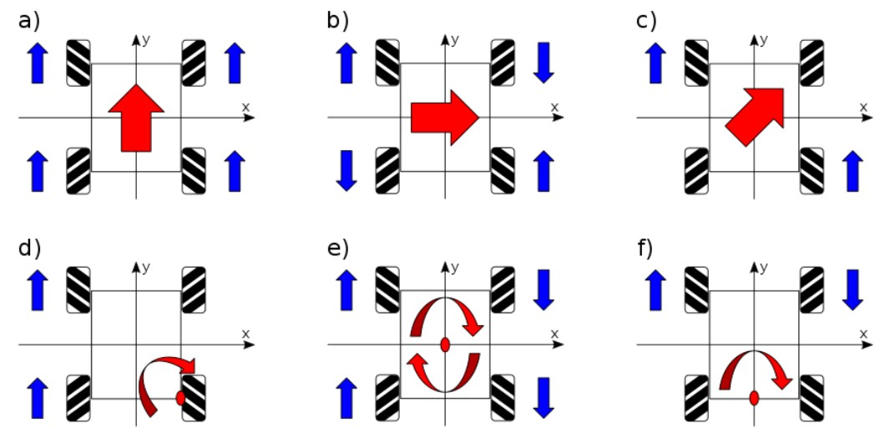
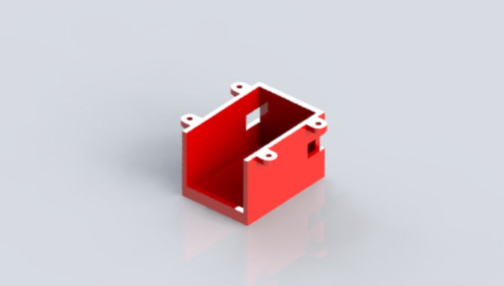
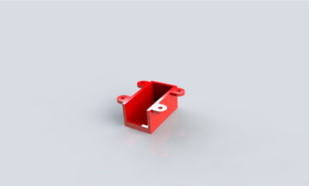
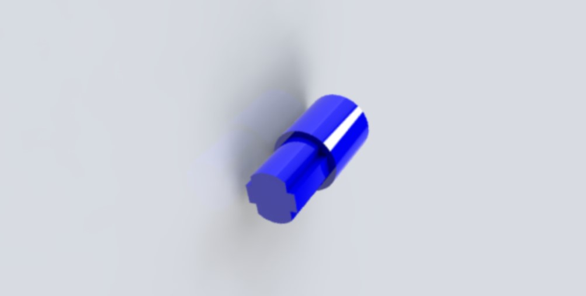
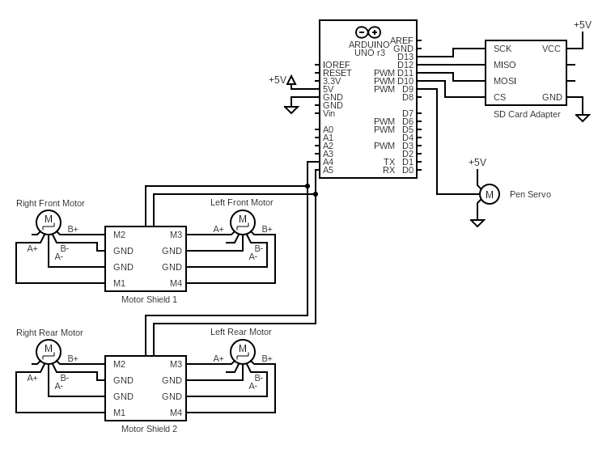
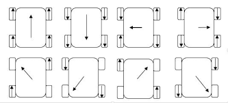

Our Design
Project Overview
With this project, we wanted to build a robot capable of drawing line art from images. With a mecanum wheel base and small frame, this approach to drawing is scalable in a way gantry drawing systems are not. We incorporated a web interface and SD card reader to provide a simple and easy to use system for generating instructions to the robot from an image. The combination of these elements creates a self-contained drawing robot, although we did not get stable enough wheel motions to allow for detailed image recreation.
Mechanical Design
Our mechanical design uses mecanum wheels and stepper motors to allow our robot to drive in any direction. The pen can be lifted and lowered using a specialized rack and pinion mechanism. All of the parts that we designed were fabricated through laser cutting or some form of 3D printing. There were three main mechanical design challenges in this project: the pen mechanism, the wheel operation system, and the chassis.
The pen mechanism design needed to raise and lower a marker a few millimeters so that it could be lifted off of the paper when drawing. It also needed to be a bit shock absorbent so that the marker would stay in contact with the paper even if there were bumps in the paper or vibrations from the motors. In order to accomplish this, a servo drives a rack and pinion mechanism to raise and lower the marker. The marker is press-fit into a plastic holder (shown in red), which sits inside of the rack (shown in black). A spring adds tension between the marker holder and the inside of the rack, which keeps the marker in consistent contact with the paper, even on slightly uneven surfaces. This design underwent relatively few changes throughout the course of this project. Renders of the initial and final pen mechanism designs are shown below.
As you can see, other than the color of plastic that was used, the only significant changes between the first iteration and the final iteration were the shape of the rack and the orientation of the servo and the supports that hold the rack in place. The rack needed to be wider in order to fit a redesigned chassis, and we decided to move the servo, pinion, and rack supports to the bottom of the chassis because it gave the top of the robot a cleaner look.
The chassis design was iterated on significantly more than the pen mechanism. The original design was large and boxy, which was necessary for it to support the large stepper motors that we originally intended on using. The holes for mounting the arduino and the servo were also all on the same side of the chassis, which made for an unbalanced design, both visually and gravitationally. Furthermore, this original chassis was designed to be 3D-printed, but had the significant design flaw of being too big to fit on the print bed, so we laser-cut it out of scrap MDF instead.

In the next iteration, we made the chassis smaller and lighter, and adjusted the holes to accommodate the smaller steppers that we had ordered. All of this was done to make our robot lighter so that we could avoid it ripping the paper that it was drawing on. This design also included four legs that increased the distance between the chassis and the ground. This allowed for more room for the pen to lift up and down, and also allowed us to mount the servo and pinion underneath the chassis, leaving more room for the arduino on the smaller chassis and reducing the chance that any of the wires would get caught in the mechanism. We chose to 3D print this part as it was the best way to fabricate the chassis with its legs. Unfortunately, in the interest of speed, this chassis was 3D printed with a thinner wall than it needed and flexed under the weight of the pen mechanism. To fix this, we laser cut the shape of the top of the chassis out of another piece of scrap MDF and fixed it to the top of the 3D printed chassis. This was very effective in increasing the strength of the chassis without wasting any PLA or requiring another long 3D print.

There was quite a bit of trial and error involved in designing a working wheel operation system. During sprint 1, we decided to experiment with swerve drive and have differential drive be our minimum viable product. Our robot needed to be able to move very precisely so we could accurately track its movement as it drew pictures. Using swerve drive, our robot would be able to move accurately in any direction without having to rotate the entire chassis by having two motors control each wheel: one making the wheel rotate and the other changing the direction the wheel was facing. This is not possible with differential drive, meaning that if we chose to use differential drive, the marker would need to be centered perfectly in the robot.

We ended up pivoting away from either of these before we started designing our robot. Swerve drive seemed to be over-scoped and differential drive seemed to be too inefficient. Instead, we decided to try using mecanum drive. Mecanum wheels allow the robot to be able to drive in any direction while only using one motor per wheel by rotating the wheels in varying directions. In order to do this, the wheels need to be rotating in opposite directions quite frequently, making it important that they have high torque. The motors also needed to be accurate, so we decided to use NEMA 17 stepper motors, which we believed would fulfill both of these qualifications. These motors need to be attached firmly to the underside of the chassis. We chose to 3D print a three sided enclosure which would be screwed to the chassis along the fourth, unenclosed side of the mount, securing the motors within. This style of mount held the motors in place very well.

The one flaw in this design was that the diameter of the motors was greater than the diameter of the wheels. There seemed to be three possible solutions to this problem: add gears between the motors and wheels, purchase larger wheels, or acquire smaller motors. The NEMA 17 motors were large, heavy, and had a much higher torque than we actually needed. Switching to smaller motors was an easy decision to make, so we decided to use NEMA 8 stepper motors instead which are significantly smaller and lower torque, but we believed were still sufficiently powerful and precise to work well for our robot.

Our mecanum wheels were unable to directly connect to our NEMA 8 stepper motors as the axle was too small. We needed a simple way to connect these two parts so as to avoid over-scoping our robot. Because of this, we chose to use a spacer rather than gears. We designed a short spacer with one end that is cross-shaped end to fit into our wheel and another that is cylindrical and fits over the motor’s shaft. The spacer was designed to be press fit, so we had to 3D print it multiple times to get the tolerances right. We were initially printing the spacer using PLA but it melted when it was attached to the motors. We determined that the motors were reaching about 100℃, which softened the PLA. To fix this, the spacers needed to be printed out of a different material. Our two options were nylon and resin. Resin is able to withstand warmer temperatures, but it is more brittle, so we decided to use nylon. After adjusting the tolerances, we reprinted the spacers using nylon. They held the motors and wheels together tightly and did not soften when the motors reached high temperatures.

In addition to melting our PLA spacers, the heat of our motors also melted the parts that we had printed to hold them in place and the legs of the chassis. To solve this problem, we had to completely change our holder design, as even with nylon motor holders, they would still melt the chassis, which was too large to print out of nylon in a reasonable amount of time. We decided to return to the laser cutter and cut pieces of MDF to protect our chassis legs from the stepper motors. There were three layers of MDF “shoes” for each leg, with spacers between the second and third layers to provide an additional thermal insulator. We then attached the motors to the shoes using zip ties, which are made of nylon and thus we believed would be able to withstand the temperature of the motors.
Electrical Design

Our electrical design is very simple, as we only have 3 major electrical systems, all of which are quite simple.
One system is the motor system. The motors are driven with two Adafruit Motor Shield V2s. The motor shields connect to the Arduino via an I2C connection, which uses pins A5 and A6. The I2C protocol allows both motor shields to use these pins without interfering with each other. We then have our 4 stepper motors connected to the motor shields. There are no electronic components other than the motor shields and the motors in this system.
Another system is the Micro SD card reader. The Arduino SD card library uses an SPI protocol to read from the Micro SD card, and the Micro SD card reader is connected to the arduino via 6 pins, 2 of which are VCC and Ground. The SD card system does not use any additional electronic components other than the Micro SD card adapter and the Micro SD card itself.
The final system is the servo motor that moves the pen up and down. This servo is connected to digital pin 9, VCC, and Ground. There are no other electronic components in the system.
Firmware Design
To read off the SD card, we used the Arduino SD card library. The library has an easy to use interface, meaning this part of the Arduino code could be pretty simple. Each time the Arduino reaches its destination, a new line is read from the SD card, and the robot completes the next instruction. The three instructions are “Go”, for driving to a point, “Up”, for raising the pen, and “Dn”, for lowering the pen. To keep the code as simple as possible, the same number of characters are read for each line, with filler characters for shorter instructions.
When given a “Go” command, the Arduino also received coordinates that the bot should travel to. By comparing these coordinates with the bot’s last location, it can figure out how far and in which direction it needs to drive. The speed of each wheel is determined by the angle at which the robot needs to go, and uses the following equations, shared by diagonal wheels.
sin(theta - 1 / 4 * PI)
sin(theta + 1 / 4 * PI)

With this iteration, we’re not using motion feedback, and rather relying on step count to track location. Each wheel is set to drive at it’s correct speed for the distance to the next waypoint, and the Arduino loops back to read the next line of the SD card.
When programming our stepper motors, we found that none of the libraries we could find allowed us to complete basic stepper movements with multiple steppers using the motor shields we had. Therefore, we programmed a new library designed to work well with our motor shields. The primary functionality of the library is to calculate what speed to run each motor to reach a destination point, with each motor arriving at the same time. Once we implemented this library, we were able to use it to drive the stepper motors at the same time at the precise speeds we needed.
Software Design
Our software primarily consisted of a website that converts raster images into instructions for the robot. Raster images are images composed of pixels; most images that we work with are raster images. The website works in several steps. Once an image is uploaded to the website, the image is first resized. Larger images take longer to process, so resizing is necessary to ensure all images can be processed in a reasonable amount of time. Next, an edge detection algorithm (from the Magick R package) is applied to the image. This makes an image with distinct lines that can be drawn and eliminates characteristics that can’t be drawn with a line, such as gradients and colors. This edge detection step determines how the final image will look, and all of the inputs on the website other than the resolution are inputs to the edge detection algorithm. Once edge detection is performed, some cleanup is performed to round off small details and make sure the final path is as smooth as possible. Next, the image is processed to create a list of “edges”, or lines between neighboring pixels. In this case, two pixels are neighbors if they touch on an edge or a corner. Lastly, the instructions are generated by starting the robot at a particular point, and following a series of connected edges until either the pen needs to be lifted and the robot needs to travel to another location, or all of the lines have been drawn and the robot is finished drawing.
This image processing is all written in R, and is accessible through a website built with the Shiny package.
All code is available in our GitHub repository